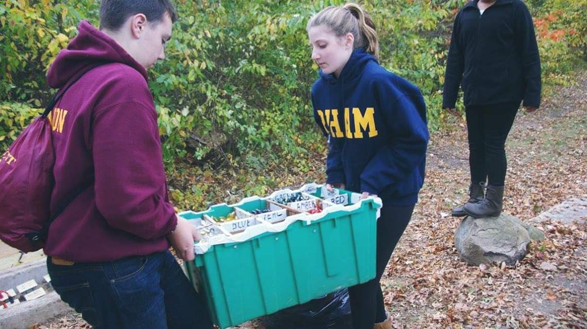

My Experience as a Volunteer

Since I was young, volunteering has been a huge part of my life. One of my first repetitive volunteer projects was with the Lebanon Junior Soccer Club, and I started out with odd jobs like setting up fields and helping with tournament scoring. Later I found a semi-permanent job in their concessions stand. I would show up in the mornings and set up the stand and the food, then stay the day and sell. This was a great experience since it taught me time management, food handling skills, money management, and most importantly, customer service and people skills. These were all real life skills that have benefited me in every sense, from school to life in general. From there in seventh grade, I heard about and joined the Lebanon Leo’s Club, a division of the Lions Club, which is an organized non-profit for community service. When I started with the club, one of our first projects was the Willimantic Walk for Warmth, where the club raised money for WAIM, an organization that provides winter heating for those in need.

Later that year, we helped to run the Lebanon country fair from the ground up, including cleaning the grounds, setting up tables and chairs, cleaning garbage during the fair and selling lemonade. I helped with this event for the next four years, and the sense of accomplishment that organizing and running an event brings. This past year, I became club secretary so I can give back to them, and try and make it even better than it already is.

Around the same time I started with the Leo’s, I joined the Channel 3 Kids Camp out of Andover. I had gone there when I was younger as a camper and had always enjoyed the camp. When I heard that at thirteen I could join as a Teen Leader, I jumped at the opportunity. While this was not a community service organization in itself, as I did have to pay to attend the program, we did do community service projects while we were there. One such example, and one of my favorite projects we did, was with the Holiday Light Fantasia in Hartford. About a month before, we went out to Goodwin Park in Hartford and worked with the coordinators to test and change over 5,000 light bulbs on the displays. Some other teens attended the event as volunteers, collecting money and directing traffic.